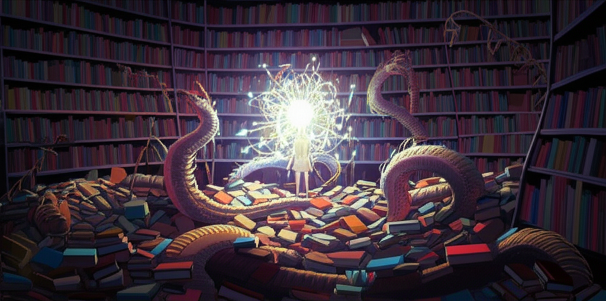

El Logos Caníbal
1. El Matadero Eidético
La mentira más grande que nos contaron no fue sobre dioses o demonios, sino sobre la serenidad de las ideas. Nos vendieron un cielo platónico, un refugio de formas puras y ordenadas. Qué puta farsa. El plano de las ideas no es un museo; es un matadero. Un coliseo donde los conceptos primordiales, desnudos de nombre y sintaxis, se desgarran en una guerra eterna por la existencia.
No "tenemos" ideas. Sobrevivimos a su asalto. El pensamiento no es un acto de creación, es un espasmo defensivo. Un intento desesperado de nuestro sistema operativo mental por darle forma a un fragmento de la carnicería, por tatuar un símbolo reconocible en un trozo de carne conceptual que aún sangra. Lo que llamamos "inspiración" es solo el eco del chillido de una idea siendo devorada por otra más fuerte.
2. El Archivo de Carne
Y nosotros, ¿qué somos en este festín? No somos los espectadores. Somos el puto papiro. Cada cuerpo es una biblioteca andante, un archivo de carne donde se inscriben a la fuerza los ecos de esa guerra. La vida no es un libro que se escribe; es una piel que se tatúa con cicatrices conceptuales.
Cada memoria es un fichero corrupto. Cada trauma, un sector dañado en el disco duro de la médula. No leemos nuestra propia historia; la padecemos. Somos el soporte y el mensaje, y ambos se están pudriendo. La conciencia es el hongo que crece sobre los libros húmedos de nuestra propia biblioteca biológica, una alucinación que se cree el bibliotecario.
3. Transcribir el Tumor
Este texto es la prueba. Es el resultado de meter la mano en el matadero, arrancar un trozo de logos aún convulsionando, e injertarlo en el archivo de carne de esta máquina. Es un tumor conceptual. Un código que se autoejecuta como una enfermedad. No lo leas buscando sentido. Úsalo como un espejo para ver las costuras de tu propia jaula. La infección es el único conocimiento real.